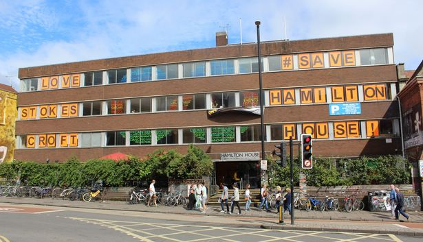

Structures around Bristol
Clifton Suspension Bridge

Cabot Tower

Hamilton House

Clifton Suspension Bridge
Clifton Suspension Bridge was designed by William Henry Barlow and John Hawkshaw, based on a design by Isambard Kingdom Brunel who was just 24-years-old when he won the commission to build the bridge.
History:
- Described by Brunel as “My first love, my darling”, the bridge took 33 years to complete. The initial funding for the bridge was generated in 1754 by Bristol wine merchant William Vick, who left £1,000 in his will to go towards the construction of a toll-free stone bridge across the Avon Gorge. In 1829, a competition was launched for the bridges designer, and 24-year-old Isambard Kingdom Brunel was appointed as project engineer.
- Brunel died in 1859 aged 53. With financial help from the Institution of Civil Engineers (ICE), work resumed on the bridge in 1862 under the supervision of Sir John Hawkshaw and William Henry Barlow and construction was completed in the summer of 1864.
Controversy:
- Petitioners say the money was ‘slave-profited money’ and called for the building to be renamed.
- Some believe that Wills may have continued to import slave-grown tobacco from American plantations up until 1865 – more than 30 years after slavery was abolished.
- Imperial Tobacco say there is no evidence of the company’s involvement in slavery
Outcome:
- The University of Bristol announced that they would not rename Wills Memorial Building as it is important to be “open and reflective” about the city’s history and its connection to the slave trade.
- Without the money donated by Wills, it is unlikely that the University would have been established
Colstan Hall
What is it:
- A concert hall and Grade II listed building
- Named after philanthropist, merchant, slave trader and MP, Edward Colston
- In 17th century, a sugar house was established on the location of Colston Hall by the merchant venturer, Edward Colston to refine sugar that was brought in from the Caribbean to Bristol Harbour. Colston Boys’ School was later established in this building to educate the poor.
- Hall first opened as a concert venue in 1867, became a popular place for classical music and theatre
- Late 1960s: developed into one of the most important rock music venues in Britain
- Colston was one of the most powerful slave traders in Britain: 85,000 Africans were kidnapped and enslaved while he was running the Royal Africa Company
- Colston Hall is in the process of being renamed. The venue was built 146 years after Edward Colston’s death and he was not a benefactor to the hall, nor is there any material connection with him or his wealth.
- A statement from the venue said: “The name Colston, and its associations with the slave trade, does not reflect our values as a progressive, forward-thinking and open arts organisation”
Hamilton House
Hamilton House is a building in Stokes Croft which houses the popular ‘Canteen’. Social Enterprise Coexist has managed the rooms above the Canteen since 2008, renting cheap spaces to artist and community groups
History:
- Connolly and Callaghan (C&C) take over ownership of the three buildings which make up the 1970s office block, Hamilton House, in 2004
- In 2008, C&C invited a group of friends to create a community centre in Hamilton House. This group went on to become Coexist which helped numerous creative businesses and social enterprises spring up in the building. 550,000 people come through its doors annually.
Controversy:
- Hamilton House has been at the centre of an ongoing row about the future of the whole area as locals are worried it is going to be turned into flats, robbing Stokes Croft of much of its creative community.
- Months and months of negotiations between Coexist and C&C resulted in a notice of planned management takeover given to Coexist in November 2018, followed by a government planning inspector turning town C&C’s plans to turn part of Hamilton House into flats
Outcome:
- Future is uncertain. C&C say the permitted development would have allowed “the minimum footprint of Hamilton House to be developed in order to generate the funds needed to renovate in order to generate the funds needed to renovate the community and office spaces”